2023 Advanced Higher Mathematics - Paper 2 marking instructions
Source: Scottish Qualifications Authority (SQA) / Qualifications Scotland. This is a StemInteract HTML companion, not an official HTML edition. Selectable text is supplied alongside original page images. Use the images or original PDF for equations, powers, fractions, vector notation, tables and diagrams; text extraction cannot fully preserve mathematical layout.
Jump to a question
PDF page 1
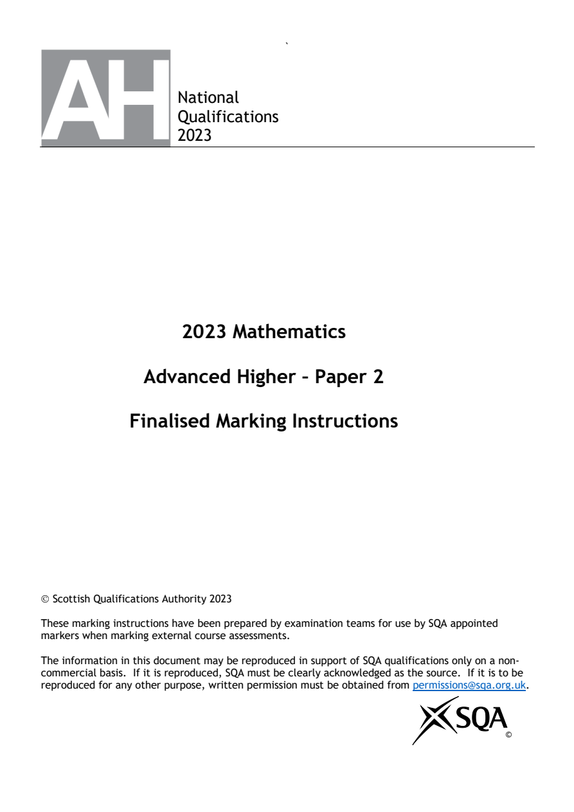
Selectable page text
`
National
Qualifications
2023
2023 Mathematics
Advanced Higher – Paper 2
Finalised Marking Instructions
Scottish Qualifications Authority 2023
These marking instructions have been prepared by examination teams for use by SQA appointed
markers when marking external course assessments.
The information in this document may be reproduced in support of SQA qualifications only on a non-
commercial basis. If it is reproduced, SQA must be clearly acknowledged as the source. If it is to be
reproduced for any other purpose, written permission must be obtained from permissions@sqa.org.uk.
©PDF page 2
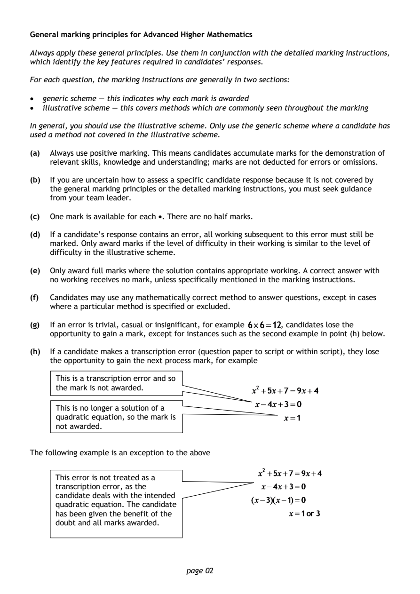
Selectable page text
General marking principles for Advanced Higher Mathematics
Always apply these general principles. Use them in conjunction with the detailed marking instructions,
which identify the key features required in candidates’ responses.
For each question, the marking instructions are generally in two sections:
• generic scheme — this indicates why each mark is awarded
• illustrative scheme — this covers methods which are commonly seen throughout the marking
In general, you should use the illustrative scheme. Only use the generic scheme where a candidate has
used a method not covered in the illustrative scheme.
(a) Always use positive marking. This means candidates accumulate marks for the demonstration of
relevant skills, knowledge and understanding; marks are not deducted for errors or omissions.
(b) If you are uncertain how to assess a specific candidate response because it is not covered by
the general marking principles or the detailed marking instructions, you must seek guidance
from your team leader.
(c) One mark is available for each •. There are no half marks.
(d) If a candidate’s response contains an error, all working subsequent to this error must still be
marked. Only award marks if the level of difficulty in their working is similar to the level of
difficulty in the illustrative scheme.
(e) Only award full marks where the solution contains appropriate working. A correct answer with
no working receives no mark, unless specifically mentioned in the marking instructions.
(f) Candidates may use any mathematically correct method to answer questions, except in cases
where a particular method is specified or excluded.
(g) If an error is trivial, casual or insignificant, for example , candidates lose the
opportunity to gain a mark, except for instances such as the second example in point (h) below.
(h) If a candidate makes a transcription error (question paper to script or within script), they lose
the opportunity to gain the next process mark, for example
This is a transcription error and so
the mark is not awarded.
This is no longer a solution of a
quadratic equation, so the mark is
not a warded.
The following example is an exception to the above
This error is not treated as a
transcription error, as the
candidate deals with the intended
quadratic equation. The candidate
has been given the benefit of the
doubt and all marks awarded.
page 02PDF page 3
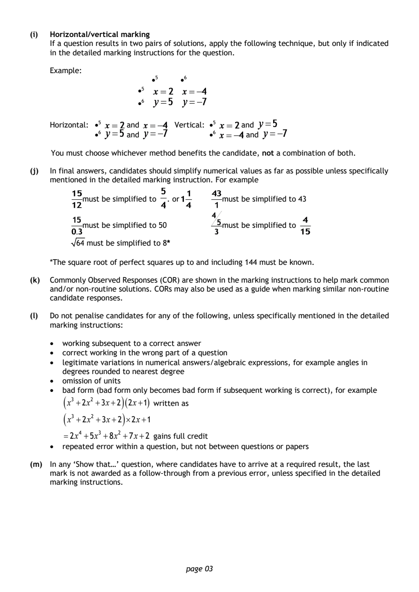
Selectable page text
(i) Horizontal/vertical marking
If a question results in two pairs of solutions, apply the following technique, but only if indicated
in the detailed marking instructions for the question.
Example:
•5 •6
•5
•6
Horizontal: •5 and Vertical: •⁵ and
•6 and •6 and
You must choose whichever method benefits the candidate, not a combination of both.
(j) In final answers, candidates should simplify numerical values as far as possible unless specifically
mentioned in the detailed marking instruction. For example
must be simplified to . or must be simplified to 43
must be simplified to 50 must be simplified to
64 must be simplified to 8*
*The square root of perfect squares up to and including 144 must be known.
(k) Commonly Observed Responses (COR) are shown in the marking instructions to help mark common
and/or non-routine solutions. CORs may also be used as a guide when marking similar non-routine
candidate responses.
(l) Do not penalise candidates for any of the following, unless specifically mentioned in the detailed
marking instructions:
• working subsequent to a correct answer
• correct working in the wrong part of a question
• legitimate variations in numerical answers/algebraic expressions, for example angles in
degrees rounded to nearest degree
• omission of units
• bad form (bad form only becomes bad form if subsequent working is correct), for example
( x³ +2x² +3x+2 )( 2x+1 ) written as
( )
x³ +2x² +3x+2 ×2x+1
=2x⁴ +5x³ +8x² +7x+2 gains full credit
• repeated error within a question, but not between questions or papers
(m) In any ‘Show that…’ question, where candidates have to arrive at a required result, the last
mark is not awarded as a follow-through from a previous error, unless specified in the detailed
marking instructions.
page 03PDF page 4

Selectable page text
(n) You must check all working carefully, even where a fundamental misunderstanding is apparent
early in a candidate’s response. You may still be able to award marks later in the question so
you must refer continually to the marking instructions. The appearance of the correct answer
does not necessarily indicate that you can award all the available marks to a candidate.
(o) You should mark legible scored-out working that has not been replaced. However, if the scored-
out working has been replaced, you must only mark the replacement working.
(p) If candidates make multiple attempts using the same strategy and do not identify their final
answer, mark all attempts and award the lowest mark. If candidates try different valid
strategies, apply the above rule to attempts within each strategy and then award the highest
mark.
For example:
Strategy 1 attempt 1 is worth 3 marks. Strategy 2 attempt 1 is worth 1 mark.
Strategy 1 attempt 2 is worth 4 marks. Strategy 2 attempt 2 is worth 5 marks.
From the attempts using strategy 1, From the attempts using strategy 2,
the resultant mark would be 3. the resultant mark would be 1.
In this case, award 3 marks.
page 04PDF page 5
Paper 2, Question 1Paper 2, Question 2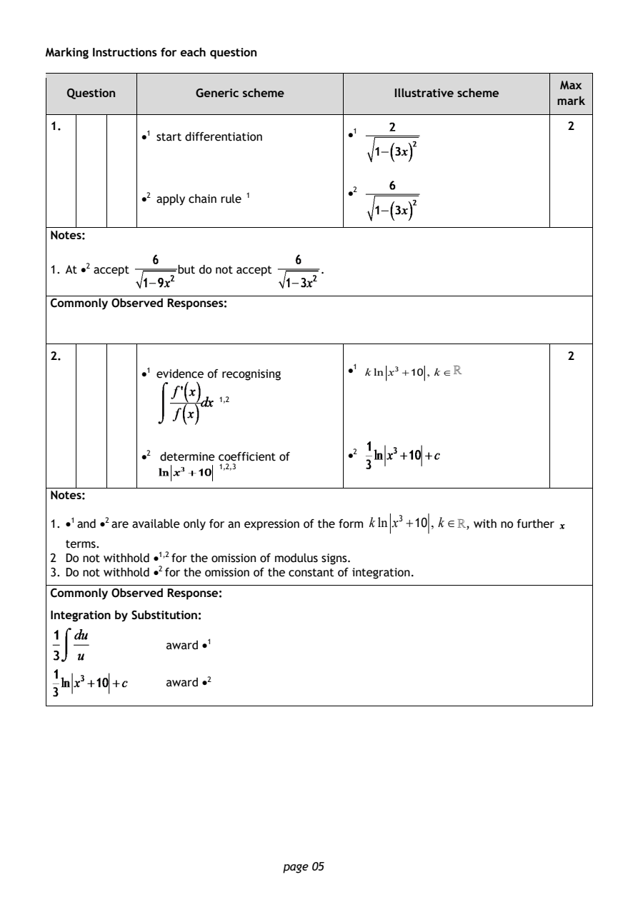
Selectable page text
Marking Instructions for each question
Max
Question Generic scheme Illustrative scheme
mark
1. 2
•1 start differentiation •1
•2
•2 apply chain rule ¹
Notes:
1. At •² accept but do not accept .
Commonly Observed Responses:
2. 2
•1 evidence of recognising •1 kln x³ +10 , k∈ℝ
1,2
•2 determine c₁_{,}o₂_{,}e₃fficient of •2
Notes:
1. •¹ and •² are available only for an expression of the form kln x³ +10 , k∈ℝ, with no further
terms.
2 Do not withhold •¹^{,}² for the omission of modulus signs.
3. Do not withhold •² for the omission of the constant of integration.
Commonly Observed Response:
Integration by Substitution:
award •¹
award •²
page 05PDF page 6
Paper 2, Question 3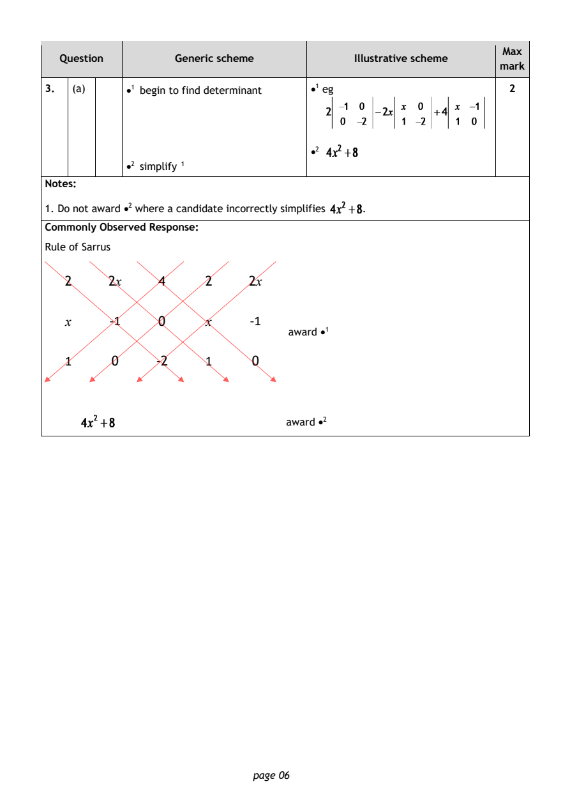
Selectable page text
Max
Question Generic scheme Illustrative scheme
mark
3. (a) •1 begin to find determinant •1 eg 2
•2
•2 simplify ¹
Notes:
1. Do not award •² where a candidate incorrectly simplifies .
Commonly Observed Response:
Rule of Sarrus
2 2x 4 2 2x
x -1 0 x -1
award •¹
1 0 -2 1 0
award •²
page 06PDF page 7
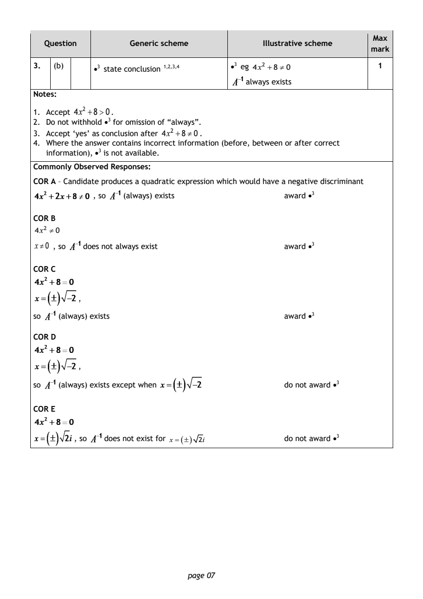
Selectable page text
Max
Question Generic scheme Illustrative scheme
mark
3. (b) •3 state conclusion ¹^{,}²^{,}³,4 •3 eg 4x² +8≠0 1
always exists
Notes:
1. Accept 4x² +8>0.
2. Do not withhold •³ for omission of “always”.
3. Accept ‘yes’ as conclusion after 4x²+8≠0.
4. Where the answer contains incorrect information (before, between or after correct
information), •³ is not available.
Commonly Observed Responses:
COR A – Candidate produces a quadratic expression which would have a negative discriminant
, so (always) exists award •³
COR B
4x² ≠0
x≠0 , so does not always exist award •³
COR C
,
so (always) exists award •³
COR D
,
so (always) exists except when do not award •³
COR E
, so does not exist for x=(±) 2i do not award •³
page 07PDF page 8
Paper 2, Question 4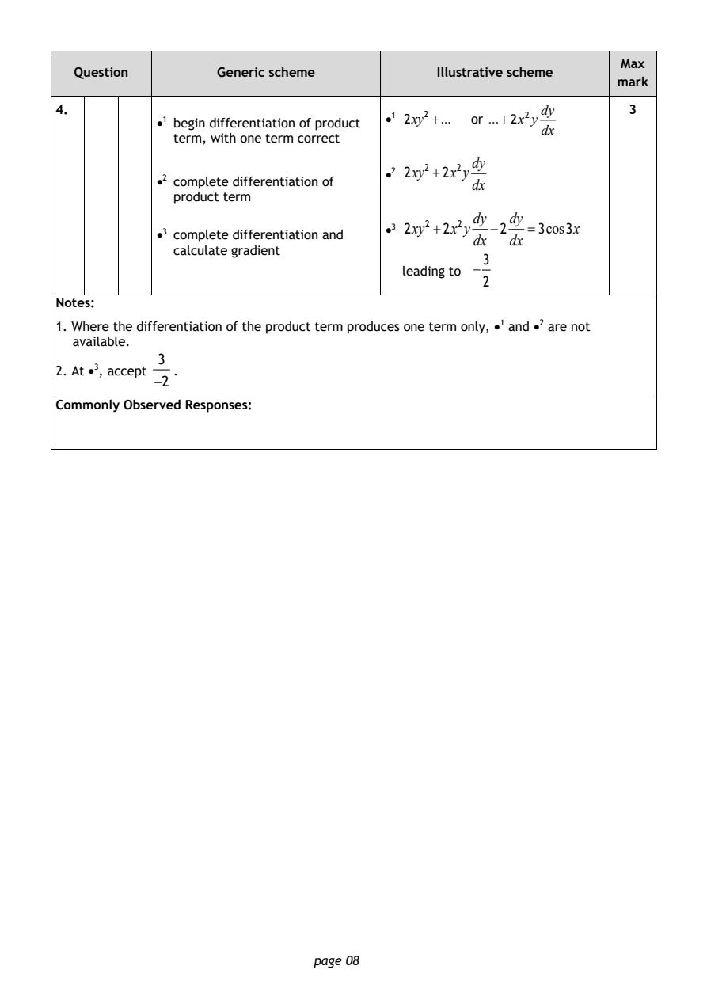
Selectable page text
Max
Question Generic scheme Illustrative scheme
mark
4. dy 3
•1 begin differentiation of product •1 2xy² +... or ...+2x²y
dx
term, with one term correct
dy
•2 2xy²+2x²y
•2 complete differentiation of dx
product term
dy dy
•3 complete differentiation and
•3 2xy² +2x²y −2 =3cos3x
dx dx
calculate gradient
3
−
leading to
2
Notes:
1. Where the differentiation of the product term produces one term only, •¹ and •² are not
available.
3
2. At •³, accept .
−2
Commonly Observed Responses:
page 08PDF page 9
Paper 2, Question 5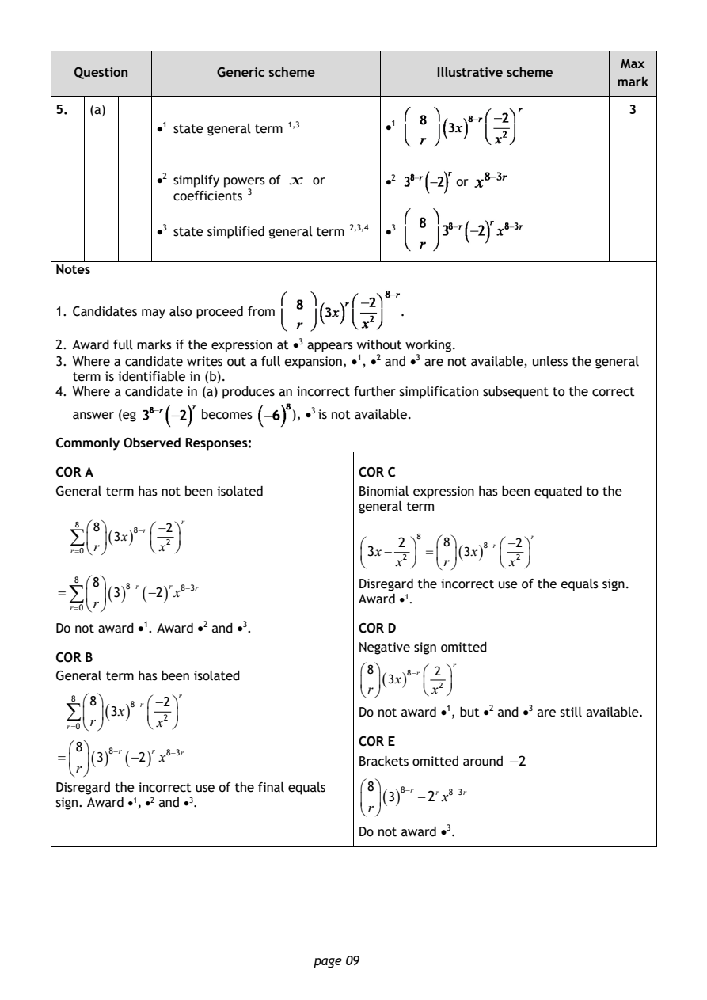
Selectable page text
Max
Question Generic scheme Illustrative scheme
mark
5. (a) 3
•1 state general term ¹^{,}³ •1
•2 simplify powers of x or •2 or
coefficients ³
•3 state simplified general term ²^{,}³^{,}⁴ •3
Notes
1. Candidates may also proceed from .
2. Award full marks if the expression at •³ appears without working.
3. Where a candidate writes out a full expansion, •¹, •2 and •³ are not available, unless the general
term is identifiable in (b).
4. Where a candidate in (a) produces an incorrect further simplification subsequent to the correct
answer (eg becomes ), •3 is not available.
Commonly Observed Responses:
COR A COR C
General term has not been isolated Binomial expression has been equated to the
general term
8 8 −2^{r}
∑
r=0 r
( 3x)⁸⁻^{r}
x² 3x− 2 ⁸ = 8 ( 3x)⁸⁻^{r} −2 ^{r}
x² r x²
8 8 Disregard the incorrect use of the equals sign.
=∑ ( 3 ) ⁸⁻^{r} (−2 ) ^{r}x⁸⁻³^{r}
Award •¹.
r
r=0
Do not award •¹. Award •² and •³. COR D
Negative sign omitted
COR B
8 2 ^{r}
General term has been isolated
( 3x)⁸⁻^{r}
r x²
8 8 −2^{r}
∑ ( 3x ) ⁸⁻^{r} Do not award •¹, but •² and •³ are still available.
r=0
r x²
8
COR E
= ( 3 ) ⁸⁻^{r} (−2 ) ^{r} x⁸⁻³^{r} Brackets omitted around −2
r
Disregard the incorrect use of the final equals 8
sign. Award •¹, •2 and •³. ( 3 ) ⁸⁻^{r} −2^{r}x⁸⁻³^{r}
r
Do not award •³.
page 09PDF page 10
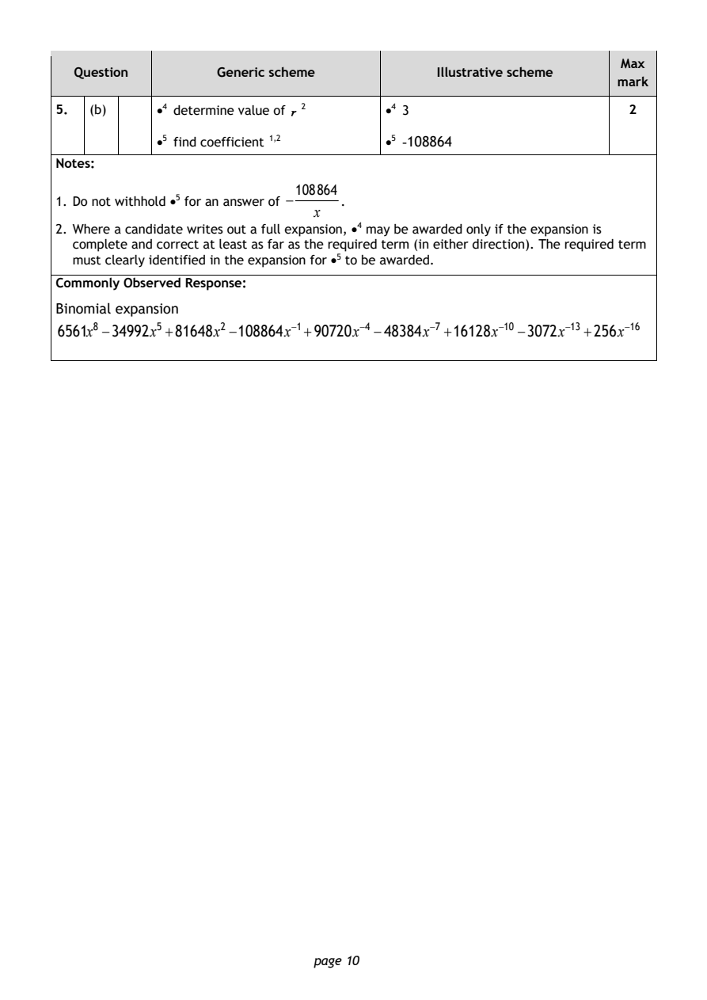
Selectable page text
Max
Question Generic scheme Illustrative scheme
mark
5. (b) •4 determine value of ² •4 3 2
•5 find coefficient ¹^{,}² •5 -108864
Notes:
108864
1. Do not withhold •⁵ for an answer of − .
x
2. Where a candidate writes out a full expansion, •⁴ may be awarded only if the expansion is
complete and correct at least as far as the required term (in either direction). The required term
must clearly identified in the expansion for •⁵ to be awarded.
Commonly Observed Response:
Binomial expansion
6561x⁸ −34992x⁵+81648x² −108864x⁻¹+90720x⁻⁴ −48384x⁻⁷ +16128x⁻¹⁰ −3072x⁻¹³+256x⁻¹⁶
page 10PDF page 11
Paper 2, Question 6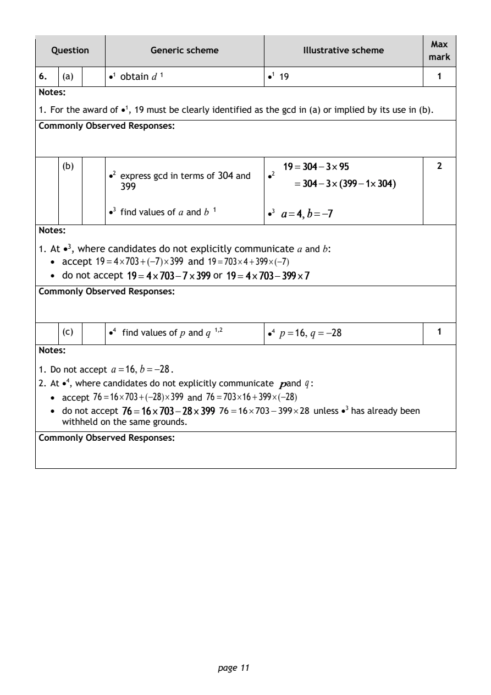
Selectable page text
Max
Question Generic scheme Illustrative scheme
mark
6. (a) •1 obtain d ¹ •1 19 1
Notes:
1. For the award of •¹, 19 must be clearly identified as the gcd in (a) or implied by its use in (b).
Commonly Observed Responses:
(b) 2
•2 express gcd in terms of 304 and •2
399
•3 find values of a and b ¹ •3
Notes:
1. At •³, where candidates do not explicitly communicate a and b:
• accept 19=4×703+(−7)×399 and 19=703×4+399×(−7)
• do not accept or
Commonly Observed Responses:
(c) •4 find values of p and q ¹^{,}² •4 p =16, q =−28 1
Notes:
1. Do not accept a=16,b=−28.
2. At •⁴, where candidates do not explicitly communicate and q:
• accept 76=16×703+(−28)×399 and 76=703×16+399×(−28)
• do not accept 76=16×703−399×28 unless •³ has already been
withheld on the same grounds.
Commonly Observed Responses:
page 11PDF page 12
Paper 2, Question 7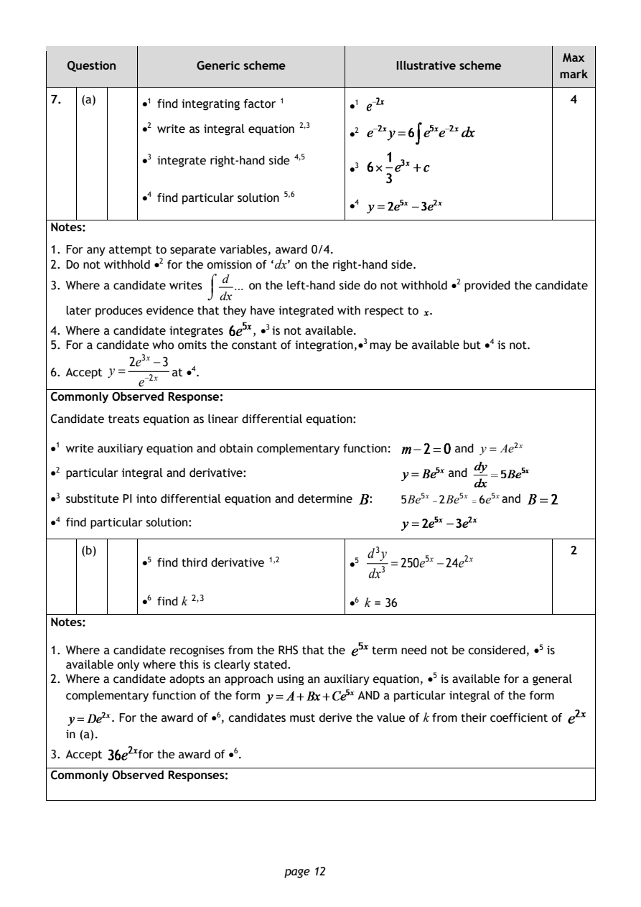
Selectable page text
Max
Question Generic scheme Illustrative scheme
mark
7. (a) •1 find integrating factor ¹ •1 4
•2 write as integral equation ²^{,}³
•2
•3 integrate right-hand side ⁴^{,}⁵
•3
•4 find particular solution ⁵^{,}⁶
•4
Notes:
1. For any attempt to separate variables, award 0/4.
2. Do not withhold •² for the omission of ‘dx’ on the right-hand side.
⌠ d
3. Where a candidate writes ... on the left-hand side do not withhold •² provided the candidate
⌡ dx
later produces evidence that they have integrated with respect to .
4. Where a candidate integrates , •3 is not available.
5. For a candidate who omits the constant of integration,•³ may be available but •⁴ is not.
2e³^{x} −3
6. Accept y = at •⁴.
e⁻²^{x}
Commonly Observed Response:
Candidate treats equation as linear differential equation:
•1 write auxiliary equation and obtain complementary function: and y = Ae²^{x}
•2 particular integral and derivative: and
•3 substitute PI into differential equation and determine : 5Be⁵^{x} ⁻2Be⁵^{x} ⁼6e⁵^{x}and
•4 find particular solution:
(b) d³y 2
•5 find third derivative ¹^{,}² •5 =250e⁵^{x} −24e²^{x}
dx³
•6 find k ²^{,}³ •6 k = 36
Notes:
1. Where a candidate recognises from the RHS that the term need not be considered, •⁵ is
available only where this is clearly stated.
2. Where a candidate adopts an approach using an auxiliary equation, •⁵ is available for a general
complementary function of the form AND a particular integral of the form
. For the award of •⁶, candidates must derive the value of k from their coefficient of
in (a).
3. Accept for the award of •⁶.
Commonly Observed Responses:
page 12PDF page 13
Paper 2, Question 8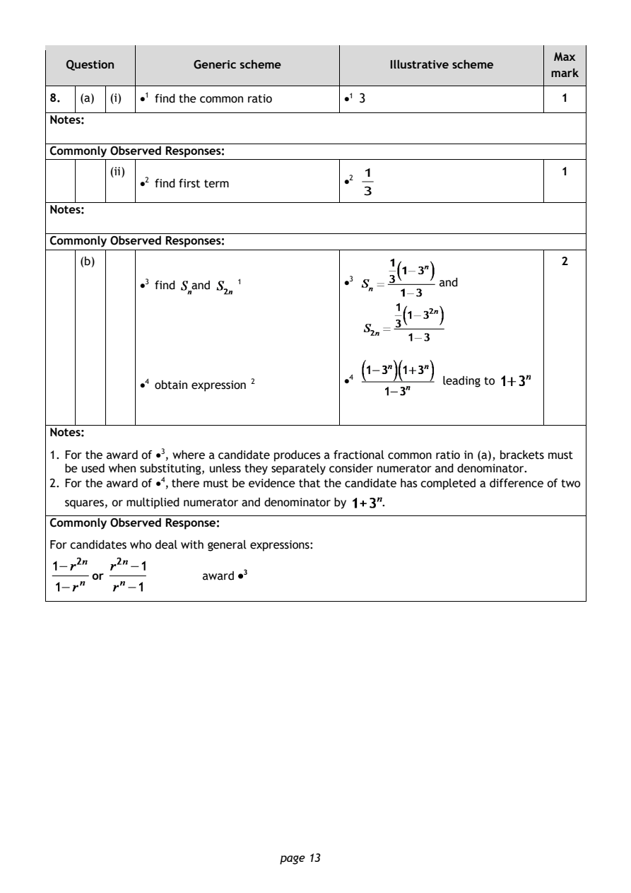
Selectable page text
Max
Question Generic scheme Illustrative scheme
mark
8. (a) (i) •1 find the common ratio •1 3 1
Notes:
Commonly Observed Responses:
(ii) 1 1
•2 find first term •2
3
Notes:
Commonly Observed Responses:
(b) 2
•3 find and 1 •3 and
•4 obtain expression ² •4 leading to
Notes:
1. For the award of •³, where a candidate produces a fractional common ratio in (a), brackets must
be used when substituting, unless they separately consider numerator and denominator.
2. For the award of •⁴, there must be evidence that the candidate has completed a difference of two
squares, or multiplied numerator and denominator by .
Commonly Observed Response:
For candidates who deal with general expressions:
or award •³
page 13PDF page 14
Paper 2, Question 9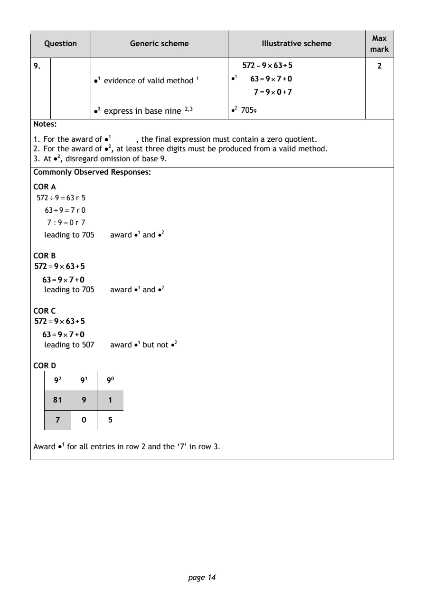
Selectable page text
Max
Question Generic scheme Illustrative scheme
mark
9. 2
•1 evidence of valid method ¹
•1
•2 express in base nine ²^{,}³ •2 705 9
Notes:
1. For the award of •¹ , the final expression must contain a zero quotient.
2. For the award of •², at least three digits must be produced from a valid method.
3. At •², disregard omission of base 9.
Commonly Observed Responses:
COR A
572÷9=63r 5
63÷9=7r 0
7÷9=0r 7
leading to 705 award •¹ and •²
COR B
leading to 705 award •¹ and •²
COR C
leading to 507 award •¹ but not •²
COR D
9² 9¹ 9⁰
81 9 1
7 0 5
Award •¹ for all entries in row 2 and the ‘7’ in row 3.
page 14PDF page 15
Paper 2, Question 10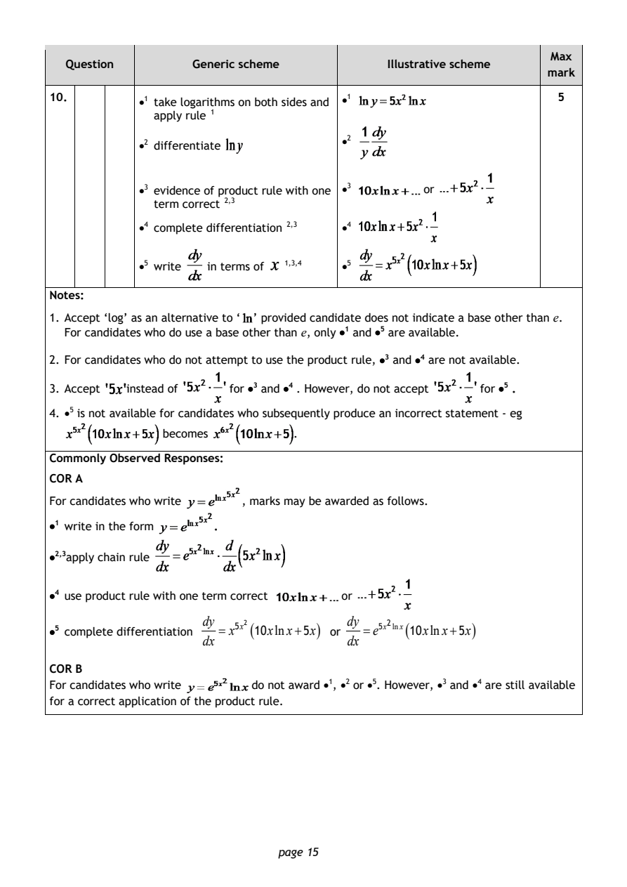
Selectable page text
Max
Question Generic scheme Illustrative scheme
mark
10. •1 take logarithms on both sides and •¹ 5
apply rule ¹
•2 differentiate
•2
•3 evidence of product rule with one •³ or
term correct ²^{,}³
•4 complete differentiation ²^{,}³ •4
•5 write in terms of 1,3,4 •5
Notes:
1. Accept ‘log’ as an alternative to ‘ ’ provided candidate does not indicate a base other than e.
For candidates who do use a base other than e, only •¹ and •⁵ are available.
2. For candidates who do not attempt to use the product rule, •³ and •⁴ are not available.
3. Accept instead of for •³ and •⁴ . However, do not accept for •⁵ .
4. •⁵ is not available for candidates who subsequently produce an incorrect statement - eg
becomes .
Commonly Observed Responses:
COR A
For candidates who write , marks may be awarded as follows.
•1 write in the form .
•2,3apply chain rule
•4 use product rule with one term correct or
dy dy
•5 complete differentiation = x⁵^{x}²( 10xlnx+5x ) or =e⁵^{x}²^{l}ⁿ^{x} ( 10xlnx+5x )
dx dx
COR B
For candidates who write do not award •¹, •2 or •⁵. However, •³ and •⁴ are still available
for a correct application of the product rule.
page 15PDF page 16
Paper 2, Question 11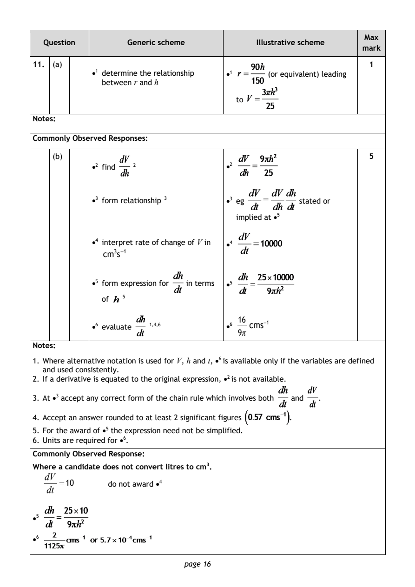
Selectable page text
Max
Question Generic scheme Illustrative scheme
mark
11. (a) 1
•1 determine the relationship •1 (or equivalent) leading
between r and h
to
Notes:
C ommonly Observed Responses:
(b) 5
•2 find 2 •2
•3 form relationship ³ •3 eg stated or
implied at •⁵
•4 interpret rate of change of V in •4
cm³s⁻¹
•5 form expression for in terms •5
of 5
16
•6 evaluate 1,4,6 •6 cms⁻¹
9π
Notes:
1. Where alternative notation is used for V, h and t, •⁶ is available only if the variables are defined
and used consistently.
2. If a derivative is equated to the original expression, •² is not available.
3. At •³ accept any correct form of the chain rule which involves both and .
4. Accept an answer rounded to at least 2 significant figures .
5. For the award of •⁵ the expression need not be simplified.
6. Units are required for •⁶.
Commonly Observed Response:
Where a candidate does not convert litres to cm³.
dV
=10
do not award •⁴
dt
•5
•6
page 16PDF page 17
Paper 2, Question 12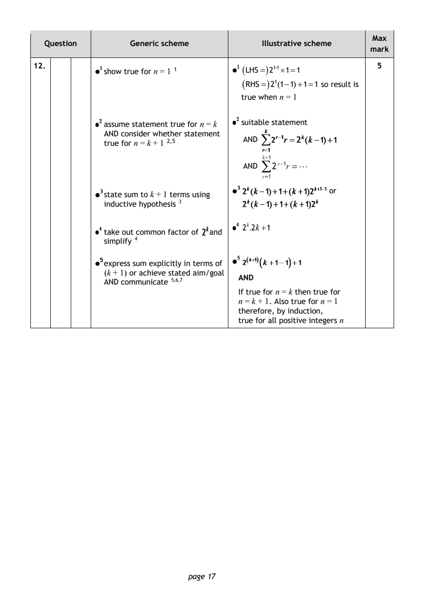
Selectable page text
Max
Question Generic scheme Illustrative scheme
mark
12. show true for n = 1 ¹ ( LHS=) 2¹⁻¹×1=1 5
( RHS=) 2¹(1−1)+1=1 so result is
true when n = 1
assume statement true for n = k suitable statement
AND consider whether statement
AND
true for n = k + 1 ²^{,}⁵
AND
or
state sum to k + 1 terms using
inductive hypothesis ³
2^{k}.2k+1
take out common factor of and
simplify ⁴
express sum explicitly in terms of
(k + 1) or achieve sta_{,}t₇ed aim/goal
AND
AND communicate ⁵^{,}⁶
If true for n = k then true for
n = k + 1. Also true for n = 1
therefore, by induction,
true for all positive integers n
page 17PDF page 18
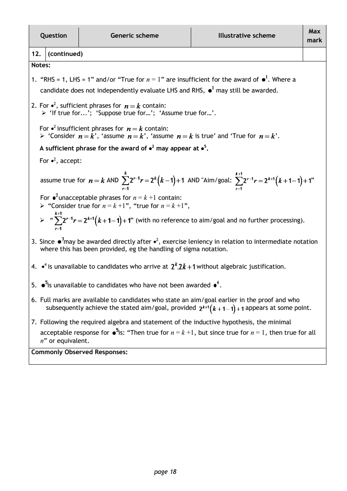
Selectable page text
Max
Question Generic scheme Illustrative scheme
mark
12. (continued)
Notes:
1. “RHS = 1, LHS = 1” and/or “True for n = 1” are insufficient for the award of . Where a
candidate does not independently evaluate LHS and RHS, may still be awarded.
2. For •², sufficient phrases for contain:
‘If true for...’; ‘Suppose true for…’; ‘Assume true for…’.
For •² insufficient phrases for contain:
‘Consider ’, ‘assume ’, ‘assume is true’ and ‘True for ’.
A sufficient phrase for the award of •² may appear at •⁵.
For •², accept:
assume true for AND AND "Aim/goal: ”
For unacceptable phrases for n = k +1 contain:
“Consider true for n = k +1”, “true for n = k +1”,
“ ” (with no reference to aim/goal and no further processing).
3. Since may be awarded directly after •², exercise leniency in relation to intermediate notation
where this has been provided, eg the handling of sigma notation.
4. •⁴ is unavailable to candidates who arrive at without algebraic justification.
5. is unavailable to candidates who have not been awarded .
6. Full marks are available to candidates who state an aim/goal earlier in the proof and who
subsequently achieve the stated aim/goal, provided appears at some point.
7. Following the required algebra and statement of the inductive hypothesis, the minimal
acceptable response for is: “Then true for n = k +1, but since true for n = 1, then true for all
n” or equivalent.
Commonly Observed Responses:
page 18PDF page 19
Paper 2, Question 13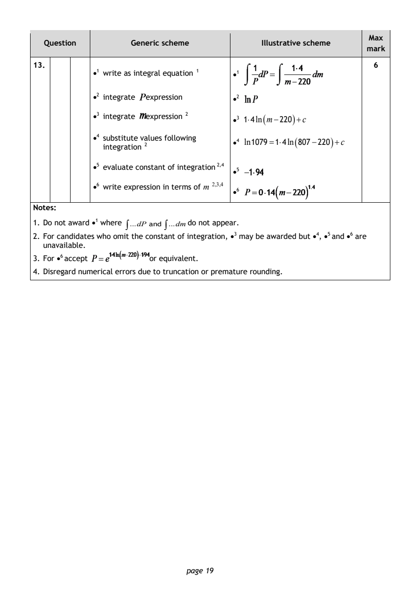
Selectable page text
Max
Question Generic scheme Illustrative scheme
mark
13. 6
•1 write as integral equation ¹ •1
•2 integrate expression •2
•3 integrate expression ² •3 1⋅4ln ( m−220 )+c
•4 substitute values following •4 ln1079=1⋅4ln ( 807−220 )+c
integration ²
•5 evaluate constant of integration ²^{,}⁴
•5
•6 write expression in terms of m ²^{,}³^{,}⁴
•6
Notes:
1. Do not award •¹ where ∫...dP and ∫...dmdo not appear.
2. For candidates who omit the constant of integration, •³ may be awarded but •⁴, •5 and •⁶ are
unavailable.
3. For •⁶ accept or equivalent.
4. Disregard numerical errors due to truncation or premature rounding.
page 19PDF page 20
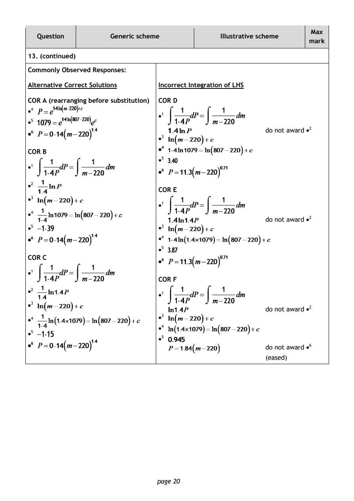
Selectable page text
Max
Question Generic scheme Illustrative scheme
mark
13. (continued)
Commonly Observed Responses:
Alternative Correct Solutions Incorrect Integration of LHS
COR A (rearranging before substitution) COR D
•4
•1
•5
do not award •²
•6
•3
•4
COR B
•5
•1
•6
•2
COR E
•3
•1
•4
do not award •²
•5 •3
•6 •4
•5
COR C
•6
•1
COR F
•2
•1
•3
do not award •²
•4
•3
•4
•5
•5
•6
do not award •⁶
(eased)
page 20PDF page 21
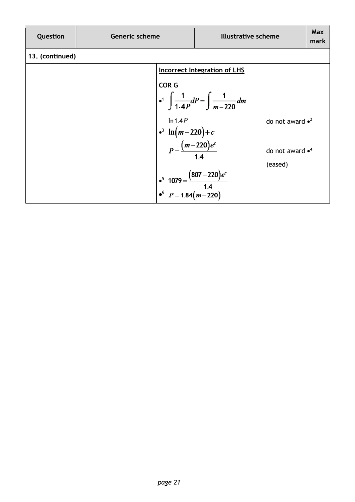
Selectable page text
Max
Question Generic scheme Illustrative scheme
mark
13. (continued)
Incorrect Integration of LHS
COR G
•1
ln1.4P do not award •²
•3
do not award •⁴
(eased)
•5
•6
page 21PDF page 22
Paper 2, Question 14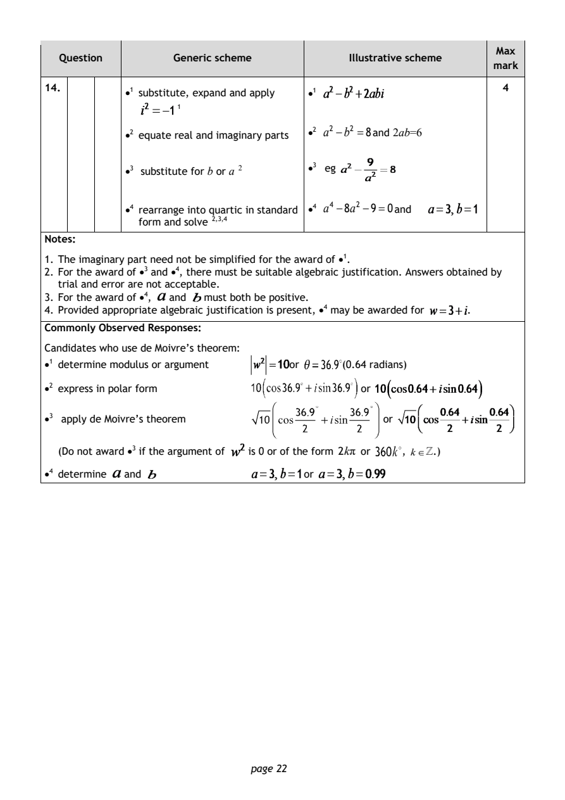
Selectable page text
Max
Question Generic scheme Illustrative scheme
mark
14. 4
•1 substitute, expand and apply •1
1
•2 equate real and imaginary parts •2 a² −b² =8and 2ab=6
•3 substitute for b or a ² •3 eg
•4 rearrange into qua_{,}₄rtic in standard •⁴ a⁴ −8a² −9=0and
form and solve ²^{,}³
Notes:
1. The imaginary part need not be simplified for the award of •¹.
2. For the award of •³ and •⁴, there must be suitable algebraic justification. Answers obtained by
trial and error are not acceptable.
3. For the award of •⁴, and must both be positive.
4. Provided appropriate algebraic justification is present, •⁴ may be awarded for .
Commonly Observed Responses:
Candidates who use de Moivre’s theorem:
•1 determine modulus or argument or (0.64 radians)
•2 express in polar form or
•3 apply de Moivre’s theorem or
(Do not award •³ if the argument of is 0 or of the form 2kπ or , k∈ℤ.)
•4 determine and or
page 22PDF page 23
Paper 2, Question 15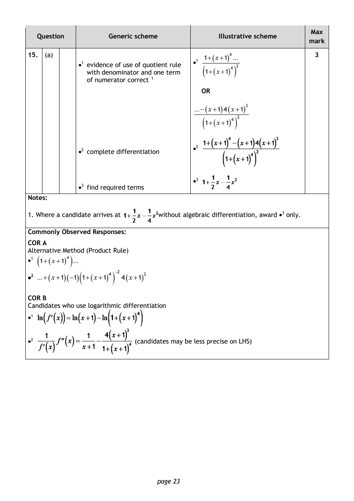
Selectable page text
Max
Question Generic scheme Illustrative scheme
mark
15. (a) 1+( x+1 ) ⁴... 3
•1 evidence of use of quotient rule
•1
( )
with denominator and one term 1+( x+1 ) ⁴ ²
of numerator correct ¹
OR
...−( x+1 ) 4 ( x+1 ) ³
( )
1+( x+1 ) ⁴ ²
•2
•2 complete differentiation
•3
•3 find required terms
Notes:
1. Where a candidate arrives at without algebraic differentiation, award •³ only.
Commonly Observed Responses:
COR A
Alternative Method (Product Rule)
( )
•1 1+(x+1 ) ⁴ ...
( ) 2
•2 ...+( x+1 )(−1 ) 1+( x+1 ) ⁴ ⁻ 4 ( x+1 ) ³
COR B
Candidates who use logarithmic differentiation
•1
•2 (candidates may be less precise on LHS)
page 23PDF page 24
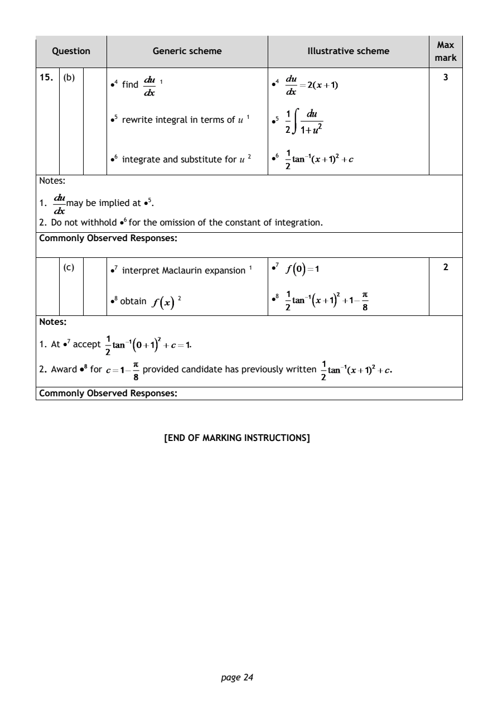
Selectable page text
Max
Question Generic scheme Illustrative scheme
mark
15. (b) 3
•4 find 1 •4
•5 rewrite integral in terms of u ¹ •5
•6 integrate and substitute for u ² •6
Notes:
1. may be implied at •⁵.
2. Do not withhold •⁶ for the omission of the constant of integration.
Commonly Observed Responses:
(c) •7 interpret Maclaurin expansion ¹ •7 2
•8 obtain 2 •8
Notes:
1. At •⁷ accept .
2. Award •⁸ for provided candidate has previously written .
Commonly Observed Responses:
[END OF MARKING INSTRUCTIONS]
page 24